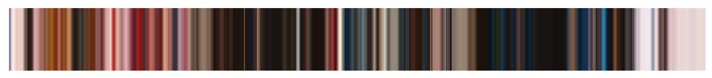
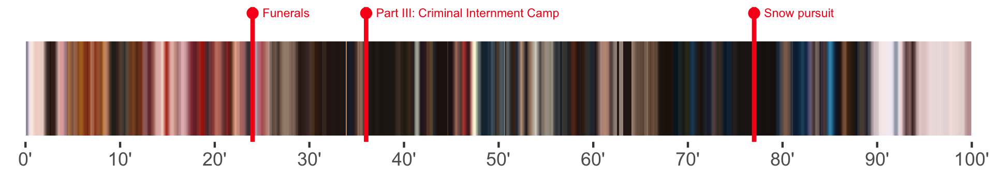
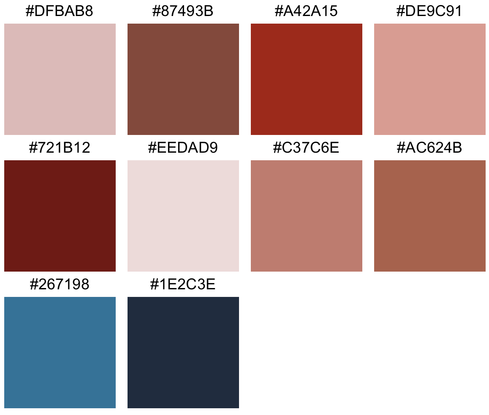
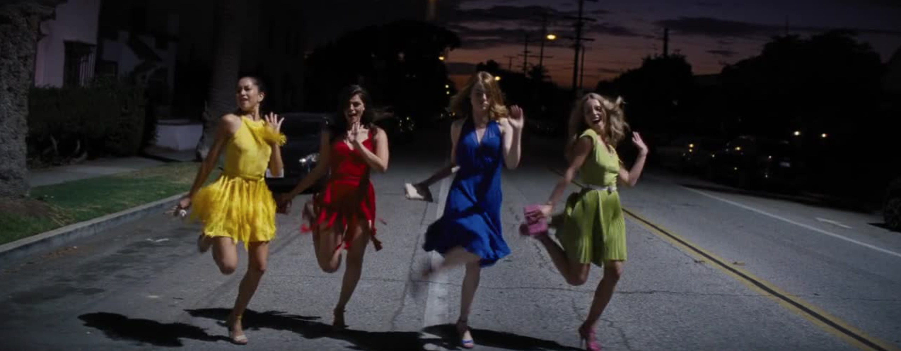
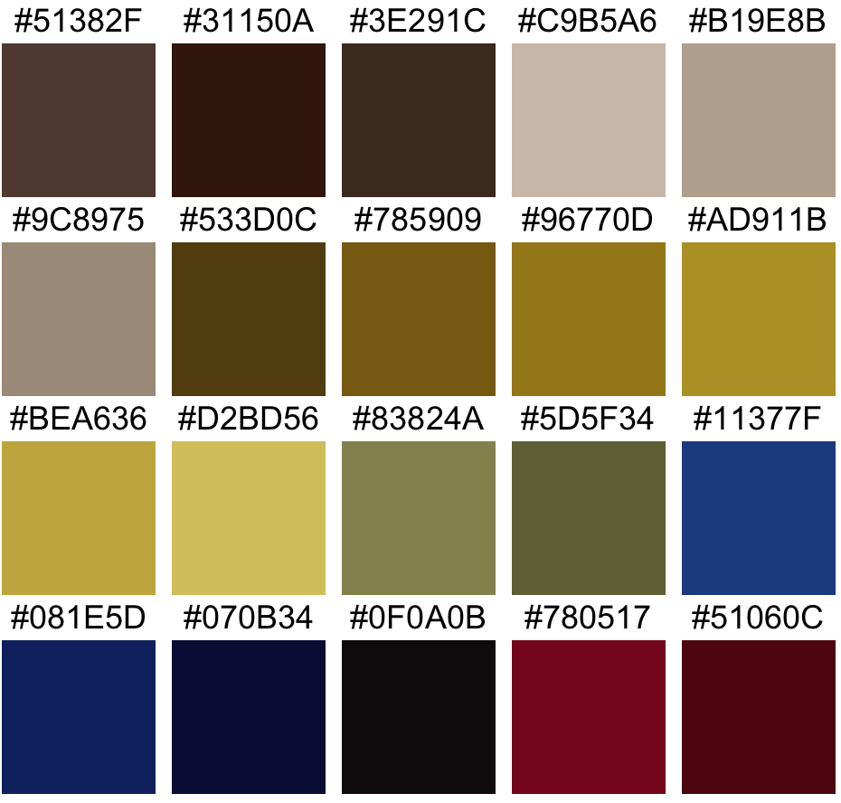

Getting main colors per frame
video <- "path/to/video.mp4"
makeFrames(video, outdir = 'frames/')
list_colors <- getColorList(dir = 'frames/')Processing the colors and plotting a color story
data(colors) # this set of colors was extracted from The Grand Budapest Hotel, directed by Wes Anderson.
main_colors <- filterColors(colors)
average_colors <- smoothColors(main_colors)
movieStack(average_colors)
Timeline can be added using the nsec argument:
movieStack(average_colors, nsec = length(colors))Timepoints can be added using the tp argument:
tp <- list(
'24' = 'Funerals',
'36' = 'Part III: Criminal Internment Camp',
'77' = 'Snow pursuit'
)
movieStack(average_colors, nsec = length(colors), tp = tp)
Tidy workflow
makeFrames("path/to/video.mp4")
p <- getColorList() %>%
filterColors() %>%
smoothColors() %>%
movieStack()Movie palette
data(colors)
palette <- colors %>%
purrr::flatten() %>%
unlist() %>%
unique() %>%
moviePalette()
checkPalette(palette, unique = TRUE)
Frame palette
makeFastFrames("path/to/movie.mp4", range = c("00:12:29.660", "00:12:31.000"))
colors <- framePalette("path/to/movie.mp4", time = '00:12:29.660')
checkPalette(colors, unique = TRUE)Or directly from a pre-existing image:
colors <- framePalette("path/to/frame.jpg", ncols = 20)
checkPalette(colors, unique = TRUE)
Acknowledgments
https://twitter.com/CINEMAPALETTES inspired me to implement the movie color palette.
https://thecolorsofmotion.com/ inspired me the movie color stacks.